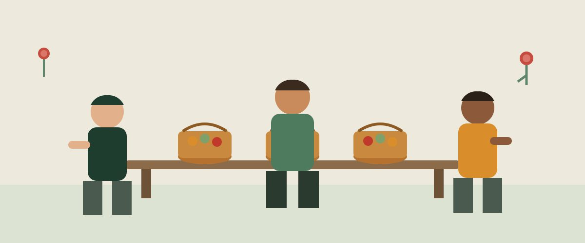

Reforço escolar
Aulas de apoio e mentoria para crianças e adolescentes em situação de vulnerabilidade, no contraturno escolar.
Há 12 anos, o Instituto Santa Rosa — Parceria Conjunto Esperança conecta pessoas dispostas a ajudar com iniciativas locais de educação, alimentação e geração de renda em comunidades vulneráveis do estado.
Acreditamos que apoio de vizinhança, quando organizado, muda trajetórias inteiras.

Aulas de apoio e mentoria para crianças e adolescentes em situação de vulnerabilidade, no contraturno escolar.
Distribuição semanal de cestas básicas e refeições preparadas em parceria com famílias das próprias comunidades.
Cursos profissionalizantes e microcrédito orientado para pequenos empreendedores locais.
Ser voluntário do Instituto Santa Rosa — Parceria Conjunto Esperança é simples e leva menos de dez minutos para começar.
Veja as iniciativas em andamento na página de projetos e escolha onde seu tempo faz mais sentido.
Envie seus dados pelo formulário de cadastro para que a equipe local possa te chamar.
Um coordenador de campo entra em contato para combinar o primeiro encontro presencial.